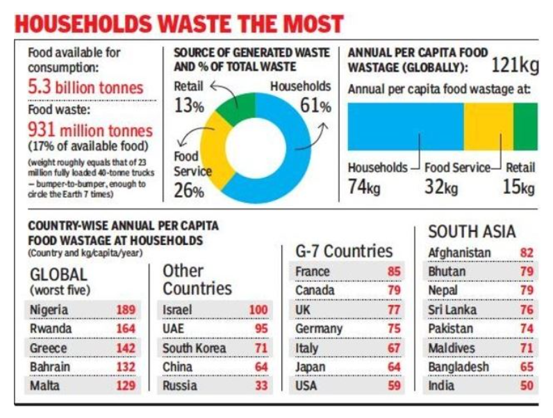

Food Waste Management System - FWMS
Food wastage is increasingly becoming a topic of concern, primarily due to the
negative impact it has on the economic and agricultural industry.
According to the UNEP report for 2021 called 'UN Food Waste Index Report 2021',
India wastes as much as 50 kilos of food per person per year. That amounts to a
staggering 68,760,163 metric tons of household food waste per year.
Even though the world produces enough food to feed twice the
world’s present population, food wastage is behind
the billions of people who are starving.

What about a solution that helps connect households and volunteers, who in turn help
connect with NGOs and Orphanages?
This is a universal, free of cost platform to help connect organizations, NGOs,
and orphanages to volunteers, donors for better management of tremendous food
waste that happens every day.
We allow for a food donor to register for food donation, volunteers to look for
potential consumer of food and NGOs and ophanages. Donors, NGOS and Volunteers can register themselves with
their requirements.
©copyright 2023